1. Presentación
Un primer paso para comenzar a implementar la gestión ambiental en las organizaciones es realizando un diagnóstico ambiental, para ello es importante conocer y valorar los componentes ambientales del entorno que pueden verse afectados por las actividades, identificar los requisitos legales aplicables, conocer el contexto de la organización por medio del ciclo de vida para identificación de impactos en sus procesos, todo ello teniendo en cuenta el levantamiento de la información en campo por medio de métodos e instrumentos de recolección de información.
En esta unidad temática se desarrollarán 6 contenidos virtuales para tener bases concretas en el proceso de Diagnóstico Ambiental en una organización:
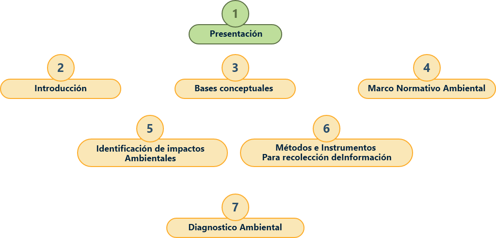
2. Introducción medio ambiente e impacto ambiental
Respetado aprendiz bienvenido a al tema de introducción medio ambiente e impacto ambiental
El ambiente es todo lo que rodea a un organismo; lo constituyen componentes como el agua, el aire, los animales, las personas, el suelo, los cuales se relacionan entre sí. El efecto que produce una determinada actividad humana sobre el ambiente se denomina impacto ambiental. Con el transcurrir de los años el ser humano ha modificado el ambiente para su beneficio por medio de la civilización y desarrollo tecnológico; sin embargo, esto también ha contribuido a perjudicar el ambiente.
Por tanto, lo invitamos a visualizar el siguiente video documental “El impacto Ambiental del Hombre”. National Geographic (2015, Noviembre 26) El impacto ambiental del hombre 2007 (completo)
3. Bases conceptuales de medio ambiente, impacto ambiental y línea base ambiental
3.1 Bases conceptuales medio ambiente
Individuo y especie
Individuo:
Todo ser vivo, independientemente de su complejidad biológica, es un individuo, capaz de realizar todas las funciones vitales: nutrición, relación y reproducción. Se refiere al individuo de una especie. Ejemplo el perro pepe es un individuo único en el universo y se llama pepe.
Especie:
Forma en la que se agrupan los seres vivos. Por ejemplo, los cernícalos forman parte de la misma especie, al igual que los gatos, los perros, los leones, las tabaibas o los laureles.
Población
Miembros de la misma especie que habitan en un ecosistema. Por ejemplo, la población de cernícalos de la isla de gran canaria son todos los cernícalos que en la isla habitan.
Comunidad
Es el conjunto de poblaciones de un ecosistema. Por ejemplo, son todos los animales que habitan en un bosque.
Ecosistema
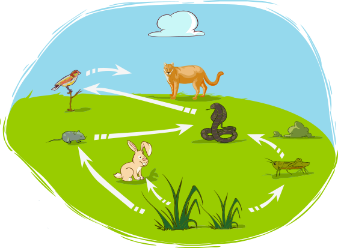
Un Ecosistema es un conjunto formado por un espacio determinado y todos los seres vivos que lo habitan. Por ello podemos decir que están formados por el medio físico y los seres vivos que en él se encuentran. Los ecosistemas se pueden clasificar en terrestres (bosques, praderas o desiertos) o acuáticos (de agua dulce o de agua salada). Los ecosistemas pueden ser de diversos tamaños, desde una charca a todo un océano, de hecho, podemos considerar a La Tierra y todos los seres vivos que en ella habitan como un gran ecosistema. A este gran ecosistema se le llama la BIOSFERA (BIO = VIDA + ESFERA).
Tipos de ecosistema
En el mundo existen diversos tipos de ecosistema se le invita a observa la riqueza de ecosistemas que tiene nuestro país Colombia, recuerde que tener diversos ecosistemas es tener varias comunidades, poblaciones de diferentes especies que se adaptan a ese entorno por eso Colombia es rica en biodiversidad. (Tierra colombiana, información. s,f)
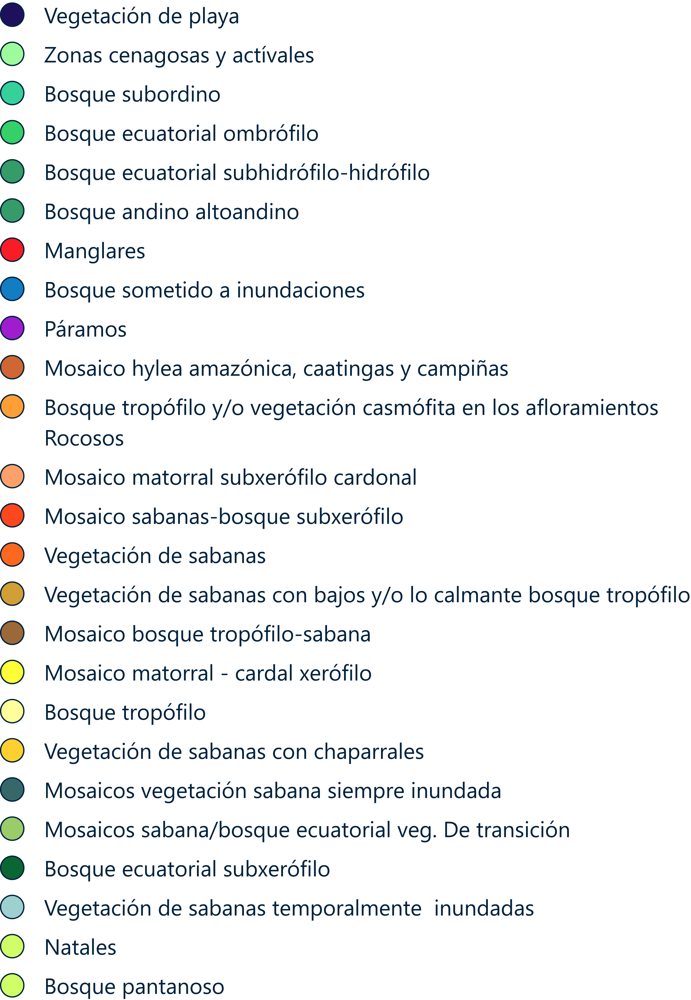
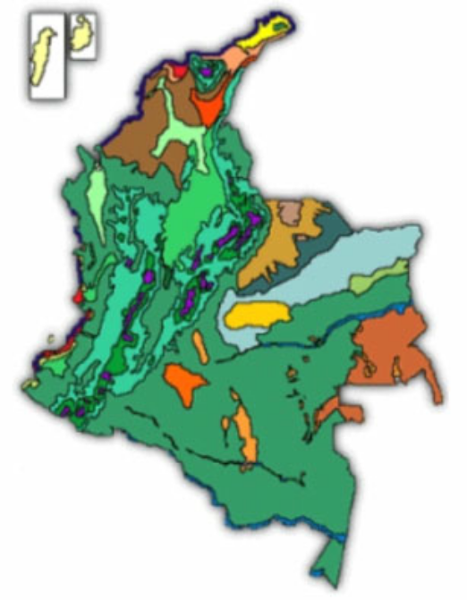
Medioambiente
El medio ambiente seria la generalidad de incluir todos los ecosistemas incluyendo el ecosistema urbano creado por los seres humanos, por eso la definición social de que medio ambiente es todo lo que nos rodea.
En el diagnóstico ambiental que se realice en la organización se incluye los recursos naturales como son flora, fauna, agua, suelo, aire, pero también el social (incluyendo las actividades humanas) como parte de un todo.
La definición especifica es la Conferencia de las Naciones Unidas sobre Medio Ambiente en Estocolmo (1972) lo define como: “Medio ambiente es el conjunto de componentes físicos, químicos, biológicos y sociales capaces de causar efectos directos o indirectos, en un plazo corto o largo, sobre los seres vivos y las actividades humanas”, citado en el libro “Agenda 21” de Foy (1998).
La definición según la ISO 14001:2015 Medio ambiente: es todo aquello que rodea al ser humano y que comprende elementos naturales, tanto físicos como biológicos, elementos artificiales y elementos sociales y las interacciones de éstos entre sí.
Cambio Climático
La Convención Marco de las Naciones Unidas sobre el Cambio Climático (CMNUCC), en su artículo 1, define el cambio climático como “cambio de clima atribuido directa o indirectamente a la actividad humana que altera la composición de la atmósfera global y que se suma a la variabilidad natural del clima observada durante períodos de tiempo comparables”. IPCC (2018) Glosario p. 188.
Efecto invernadero
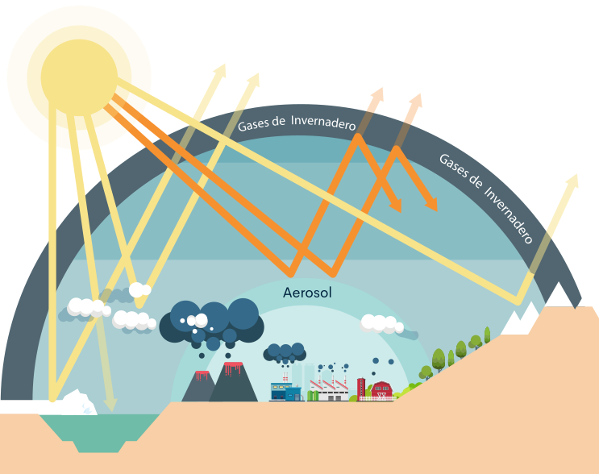
El IPCC Panel Intergubernamental sobre Cambio Climático establece que el efecto invernadero, es el efecto radiactivo infrarrojo de todos los componentes de la atmósfera que absorben en el infrarrojo, por lo tanto los gases de efecto invernadero y las nubes y, en menor medida, los aerosoles absorben la radiación terrestre emitida por la superficie de la Tierra, esta modificación de la concentración de los gases de efecto invernadero debida a emisiones antropógenas contribuye a un aumento de la temperatura en la superficie o índice de calentamiento. IPCC (2018) Glosario p. 190.
Capa de ozono
El IPCC (2013) Panel Intergubernamental sobre Cambio Climático establece que la capa de ozono define que en la estratosfera contiene una capa en que la concentración de ozono es máxima, denominada capa de ozono. Esta capa abarca aproximadamente desde los 12 km hasta los 40 km por encima de la superficie terrestre. La concentración de ozono alcanza un valor máximo entre los 20 km y los 25 km aproximadamente. Esta capa ha sido mermada por efecto de las emisiones humanas de compuestos de cloro y de bromo. IPCC (2018) Glosario p. 188.
Calentamiento global
La PNCC (2017) que es sus siglas traduce: (política nacional de cambio climático) establece que el calentamiento global es causado por las emisiones de gases de efecto invernadero generadas por distintas actividades humanas y coincide en afirmar que dicho cambio ha ocasionado impactos en sistemas humanos y naturales en todo el mundo. De continuar con la tendencia de emisiones, la temperatura promedio global aumentará en más de 4 °C y consecuentemente se incrementará la probabilidad de impactos climáticos severos e irreversibles como la pérdida de ecosistemas, inseguridad alimentaria, inundaciones, entre otros. MINAMBIENTE (2017) Política Nacional de Cambio Climático p.31.
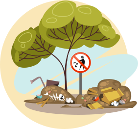
Evaluación de impacto ambiental
La CAR (Corporación Autónoma Regional) define que la evaluación de impacto ambiental es el resultado de medir y ponderar los efectos de las actividades del desarrollo humano o la carencia de acciones sobre distintos componentes del medio ambiente durante una etapa de planeación. CAR (2020) Glosario de términos.
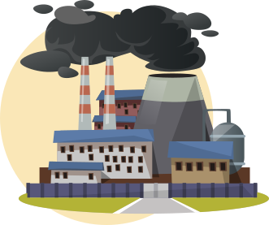
Impacto Ambiental
La CAR (corporación Autónoma Regional) establece que el impacto ambiental es cualquier alteración en el medio físico, químico, biológico, cultural y socioeconómico que pueda ser atribuido a actividades humanas relacionadas con las necesidades del proyecto CAR (2020) Glosario de términos.
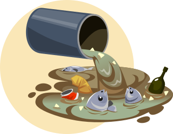
Contaminación
Se entiende por contaminación la alteración del ambiente con sustancias o formas de energía puestas en él, por actividad humana o de la naturaleza, en cantidades, concentraciones o niveles capaces de interferir el bienestar y la salud de las personas, atentar contra la flora y la fauna, degradar la calidad del ambiente de los recursos de la nación o de los particulares MINAMBIENTE (1974) Decreto 2811 de 1974. Artículo 8.
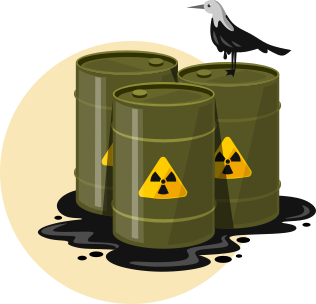
Contaminante
Se entiende por contaminante cualquier elemento, combinación de elementos, o forma de energía que actual o potencialmente pueda producir alteración ambiental de las precedentemente descritas. La contaminación puede ser física, química o biológica.
Conclusión
Los seres vivos presentan varios niveles de organización que van desde el nivel atómico o molecular, la célula, los tejidos, los órganos, los organismos (seres vivos como tal representando un individuo de una especie), población (varios individuos de la misma especie), comunidad (varias especies que conviven juntas y que tienen interacciones como cadena alimenticia, mutualismo, comensalismo, simbiosis, etc., ecosistema ( varias comunidades en un mismo ambiente especifico) hasta Medio Ambiente todo lo que nos rodea.
Estos conceptos son relevantes para entender la diferencia en cuanto a problemas legales ambientales cuando se dice que una empresa acaba con un ecosistema es una opinión que puede tener demandas millonarias porque esto redunda muchas especies y un medio específico con característica.
Muchas veces estas empresas disminuyen la connotación al haber afectado una población o un individuo para que la multa disminuya, pero esto no quiere decir que sea menos importante, puede ser una especie en vía de extinción, importante para mantener el eslabón de la cadena alimenticia, una especie con unas funciones eco sistemáticas esenciales para este, si es cría o hembra.
Todas estas variables que dependen de los casos pueden ser de multas millonarias, pero muchas veces las empresas tienen el dinero para pagar las multas, por tanto, también existen sanciones de sellamiento y cerramiento.
Reconocer los hábitats de las especies en el área de influencia del proyecto o de una organización y reconocer las actividades de la organización si afectan ese hábitat de manera directa a la especie o de manera indirecta contaminando o afectando el agua, el suelo, el aire, esto nos sirve para identificar medidas de prevención y mitigación ambiental.
Por eso algunas empresas prefieren que los ambientes ya estén intervenidos por el hombre para no afectar el medio y es ahí donde vemos que personas inescrupulosas realizan casos ilegales como rellenar de basura y escombros los humedales para que estos se extingan y cuando ya no se pueda hacer nada por él sea más fácil obtener la licencia de construcción en esta zona a futuro.
Pregunta de reflexión
¿Usted, conoce casos de empresas donde se hallan afectado alguna especie, población, comunidad o ecosistema en Colombia?
3.2 Componentes ambientales
Aspectos ambientales que constituyen un medio (abiótico o inerte, biótico o socioeconómico) como, por ejemplo, componente atmosférico, hidrológico, faunístico, demográfico, entre otros.
En términos generales, en el marco del proceso de licenciamiento ambiental los aspectos a evaluar para la determinación del área de influencia se deben plantear considerando una organización jerárquica de medio y componente, en la cual, los medios se entienden como la división general del ambiente y máxima categoría de abordaje, y los componentes corresponden a los elementos ambientales que constituyen un medio, como se presenta a continuación:
El medio abiótico
Contiene los componentes geológico, geomorfológico, paisaje, suelo y uso del suelo, hidrológico, hidrogeológico, oceanográfico, geotécnico y atmosférico, entre otros.
El medio biótico
El medio biótico comprende los componentes flora, fauna e hidrobiota.
El medio socioeconómico
Consta de los componentes demográfico, espacial, económico, cultural, arqueológico y político-organizativo.
Área de influencia
Para definir el área de influencia, es necesario estimar la localización, tipo e intensidad de uso de los recursos durante las distintas fases del desarrollo del proyecto, obra o actividad, así como considerar los impactos generados sobre estos y su variación en tiempo y espacio.
Área de influencia directa (AID)
El área de influencia directa es aquella donde se presentan los impactos generados en las fases de construcción y/o operación de un proyecto, obra o actividad; está relacionada con el sitio donde se ubica la organización y su infraestructura.
De acuerdo con el impacto generado el área puede o no cambiar y de acuerdo a esto se deben delimitar las áreas de influencia sobre todos los componentes. La caracterización del AID debe ofrecer una visión detallada de los componentes.
Área de influencia indirecta (AII)
El área donde los impactos se propagan hacia la zona externa al área de influencia directa y se extiende tanto como el efecto del impacto lo permita.
Metodología para la recolección de información de los componentes ambientales
Consultar información secundaria del área de estudio como cartográfica referente a cada uno de los componentes (p.ej. Googlemaps, Guía de Zonificación y Codificación de Cuencas Hidrográficas, publicada por el Instituto de Hidrología, Meteorología y Estudios Ambientales - IDEAM y el Ministerio de Ambiente y Desarrollo Sostenible – MADS, planchas del Servicio Geológico Colombiano, fotografías satelitales e imágenes de sensores remotos, bases cartográficas del IGAC, información cartográfica oficial disponible respecto a la división político-administrativa del área de estudio, entre otros), así como información de fuentes oficiales de índole local, regional y nacional (POMCAS, Instrumentos de ordenamiento territorial, ERA, ENA, entre otros), teniendo en cuenta la localización del proyecto, obra o actividad.
Realizar reconocimiento del área, con el fin de corroborar la información secundaria consultada y la establecida en las imágenes satelitales, haciendo uso de recorridos definidos y estableciendo y/o ratificando puntos de interés para el levantamiento de información y/o muestreos.
A partir de esta información identificar aspectos relevantes y establecer puntos de interés por su vulnerabilidad o conservación ambiental y social de los medios físicos, como bióticos y socioeconómicos.
Definir y/o identificar las actividades propuestas para las diferentes fases, de acuerdo con las necesidades del proyecto, obra o actividad.
Identificar y definir las unidades mínimas de análisis para cada uno de los componentes (p.ej. hídrico, geológico, geomorfológico, flora, fauna, demográfico, espacial, cultural, entre otros), que se presenten como relevantes.
Teniendo en cuenta lo anterior, obtener, definir y/o delimitar un área de influencia directa e indirecta. trazar un polígono con base en la información estableciendo el área donde se manifestarían los impactos ambientales significativos para cada uno de los componentes de los medios abiótico, biótico y socioeconómico, utilizando criterios y variables relacionados con la presencia de elementos o condiciones que se evidencian como factores que inciden en la trascendencia de los posibles impactos, como: cambios de coberturas de la tierra, geo formas, puntos de convergencia de dos cuerpos de agua, cambios de pendiente, posibles puntos de captación y vertimiento, divisiones territoriales, entre otros.
Notas
En caso de mayor detalle de la información requerida para realizar el inventario ambiental o línea base ambiental de los componentes ambientales.
ver la siguiente guía.
En caso de construir un inventario ambiental o línea base ambiental de los componentes ambientales para un estudio de impacto ambiental para el otorgamiento de una licencia ambiental debe acatarse adicionalmente los términos de referencia que dicta el ANLA Autoridad Nacional de Licencias Ambientales si aplica para el tipo de proyecto en el cual le mencionan que tener en cuenta los requisitos específicos que solicita la autoridad ambiental.
Ver la siguiente página:
Tipos de Componentes Ambientales
Para realizar un diagnóstico ambiental de la organización es importante identificar los componentes ambientales que rodea la organización en su área de influencia directa e indirecta para así definir si estos componentes ambientales están siendo afectados o pueden ser afectados por las actividades de la organización.
Identificar los componentes ambientales en un área de estudio, también se le conoce como línea base ambiental o inventario ambiental y hace parte del diagnóstico ambiental en una organización.
Su función es caracterizar el entorno en el que se localiza, identificando su evolución y mecanismos de interacción, la calidad de sus componentes ambientales y la fragilidad a cada tipo de actuación y su calidad. Como se recordará: - la calidad de los componentes ambientales (y por extensión del entorno), hace referencia al valor intrínseco del factor ambiental, de acuerdo con criterios conservación, representatividad, exclusividad, función ambiental y/o interés social. - la fragilidad de los componentes ambientales (y por extensión del entorno), es la capacidad que tiene un factor ambiental de verse alterado por las acciones de proyecto, obra o actividad de una actuación determinada.
El contenido del inventario debe ser completo, es decir, ha de considerar al menos los factores ambientales básicos (agua, suelo, aire, flora y fauna), dependiendo el grado y detalle del análisis de éstos de las necesidades que derivan del tipo de medio en el que se actúa.
|
El medio abiótico Contiene los componentes geológico, geomorfológico, paisaje, suelo y uso del suelo, hidrológico, hidrogeológico, oceanográfico, geotécnico y atmosférico, entre otros. |
El medio biótico Comprende los componentes flora, fauna e hidrobiota. |
|
El medio socioeconómico consta de los componentes demográfico, espacial, económico, cultural, arqueológico y político-organizativo. |
A continuación se describe cada componente:
Ambiente Físico: incluye los componentes abióticos del ecosistema
En esta categoría se incluyen todas las características físicas en o cerca de la superficie del proyecto, las formaciones terrestres, declives, suelos, geología, recursos minerales y peligros naturales.
También se incluyen procesos importantes como la erosión, estabilidad de declives y otras propiedades del suelo. Adicionalmente a la descripción de los usos actuales y futuros, se pueden considerar aspectos especiales como las tierras agrícolas y las tierras preservadas para usos especiales (por ejemplo, áreas naturales protegidas). Se pueden considerar aspectos como el valor de la tierra, los derechos de propiedad, zonificación, y conformidad con los planes oficiales.
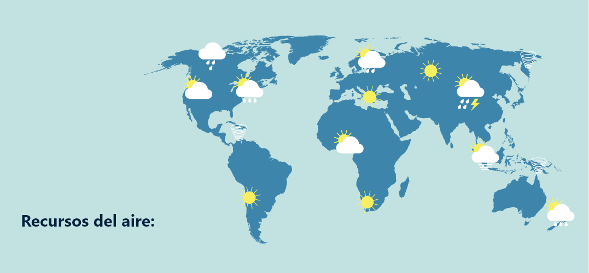
Incluye una descripción del clima y la meteorología (balance del agua, estaciones, calidad del aire), así como los temas referidos al ruido (niveles de ruido ambiental, la existencia de fuentes de ruido, sensibilidad de los receptores, las reglamentaciones ambientales), olores, calor y luz, que se incluyen en la categoría de “aire”, porque sus efectos son generalmente transmitidos a través de la atmósfera.
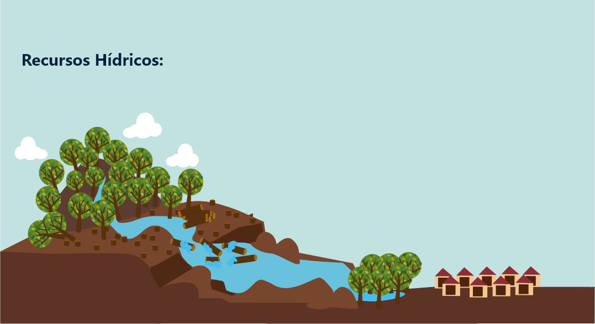
Se incluyen todos los aspectos de los recursos hídricos superficiales y subterráneos, empezando por sus características físicas básicas (redes de drenaje, canales y zonas inundables, riberas y batimetría de lagos y estuarios, la capa freática y sus propiedades, el sistema de flujo de agua subterránea, la cantidad (caudales) y calidad (cuando existan datos). Al igual que los recursos terrestres, la descripción incluye procesos y otras características dinámicas del medio ambiente, (por ejemplo, diversidad biológica en lagos, lagunas y ríos, interacciones de las cadenas tróficas) y el manejo del agua (abastecimiento, uso, derechos de uso, estándares de calidad, regulaciones, planes para administrar zonas costeras, etc.)
Ambiente Biótico
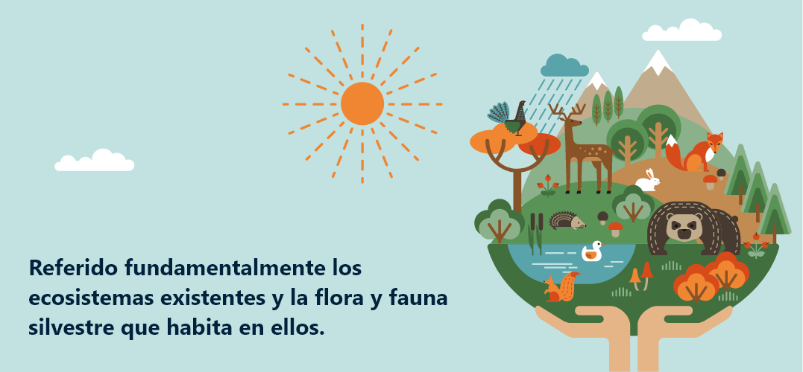
Identifica las especies de flora y fauna silvestre características de la zona, los diferentes ecosistemas y zonas de vida, enfatizando la manera en que estos funcionan para garantizar la productividad biológica y la diversidad (por ejemplo, cómo la vegetación permite sostener la pesca y la vida silvestre, cómo los hábitat de la vida silvestre soportan el ciclo de vida permitiendo la reproducción, migración, alimentación y protección).
Describe también áreas únicas, zonas en transición (bordes), otros recursos de especial importancia, y el uso de los recursos biológicos para la agricultura, silvicultura, pesca, etc.
Ambiente Socioeconómico
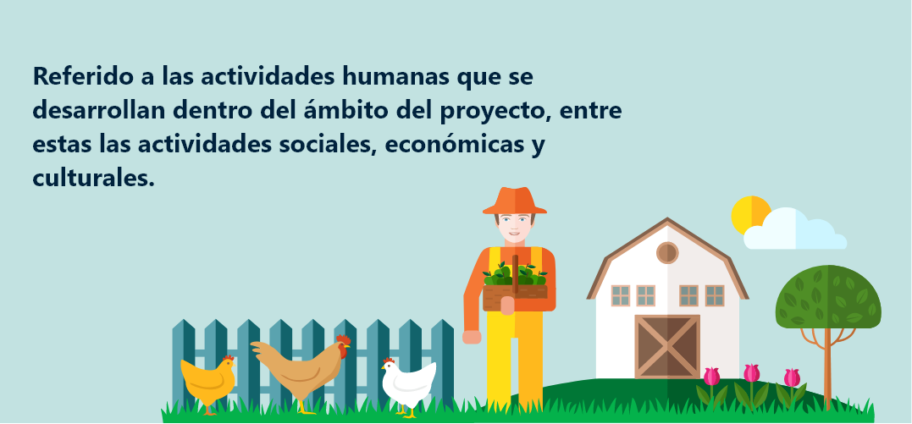
Esta categoría incluye la población humana (tamaño, distribución, etnia y otras características); actividades económicas (empleo, inversión, ingreso promedio, impuestos, etc.) en el área del proyecto. Usualmente, se incluye aquí una descripción de la infraestructura socioeconómica, como los servicios e instalaciones públicas y privadas, incluyendo el transporte, las viviendas, escuelas, parques, protección policial y contra incendio, servicios de salud, abastecimiento de agua y desagüe, manejo del agua de lluvia y desechos sólidos.
La discusión sobre la infraestructura puede extenderse a temas como el tráfico (donde el proyecto podría tener impacto en el corto o largo plazo sobre las vías de acceso o los niveles de tráfico), los recursos energéticos (por ejemplo, el uso y conservación de la energía en un proyecto) y los materiales peligrosos.
Recursos Culturales y Estéticos
Usualmente, comprende una discusión sobre la ubicación específica del proyecto desde el punto de vista arqueológico, histórico y de belleza paisajista, con algún contexto narrativo explicando sus significados. Los recursos estéticos pueden incluir muchos elementos del estilo de vida y los valores de la gente, como los recursos visuales y escénicos.
Conclusión
Es importante diagnosticar los componentes ambientales que están en el área de influencia del proyecto, obra o actividad para identificar los posibles impactos ambientales o mitigar los impactos que puede ocasionar por las labores humanas al entorno.
La caracterización de los sistemas socio ecológicos, es una actividad que le permite al equipo de trabajo que está realizando el diagnóstico ambiental, conocer en detalle las características generales y particulares de la acción propuesta, desde la perspectiva de la especialidad o disciplina de cada una de las personas participantes.
Una salida de campo para visitar un sistema socio ecológico nos puede servir para identificar y describir dicho entorno.
3.3 Bases conceptuales IMPACTO AMBIENTAL
Aspecto ambiental
Elemento de las actividades, productos o servicios de una organización que interactúa o puede interactuar con el medio ambiente.
ICONTEC (2015) NTC ISO 14001 Sistemas de Gestión Ambiental. Requisitos con orientación para su uso p 3.
Tipos de aspecto ambiental
Los aspectos ambientales son considerados positivos si ayudan al medio ambiente o negativos si desfavorecen al medio ambiente.
Ejemplos:
Generación de residuos.
Consumo de agua.
Consumo de materiales.
Consumo de agua.
Vertimientos.
Generación de ruidos.
Generación de residuos de aparatos eléctricos y electrónicos.
Emisiones atmosféricas por fuentes fijas y móviles.
Generación de escombros y malos olores.
Publicidad exterior visual.
Educación ambiental. (+)
Generación de calor.
Consumo de combustibles.
Criterios ambientales para la adquisición de insumos y materiales. (+)
Para saber más puede consultar: sobreocupación del espacio, entre otros. Arboleda J. (2008) Manual de evaluación de impacto ambiental. Pág. 20-21.
Evaluación de Impacto Ambiental (EIA)
Se entiende por Evaluación de Impacto Ambiental, el conjunto de estudios y sistemas técnicos que permiten estimar los efectos que la ejecución de un determinado proyecto, obra o actividad, causa sobre el medio ambiente, el cual tiene la identificación de los aspectos e impactos ambientales por medio de metodologías cuantitativas y/o cualitativas como puede ser el desarrollo de matrices de impacto ambiental. (Vicente Conesa -Guía Metodológica para la Evaluación del Impacto Ambiental).
Por lo tanto la EIA, debe cubrir cada una de las etapas del proyecto, obra o actividad.
Ver tabla: La EIA como instrumento para incorporar la variable ambiental Manual EIA Jorge Arboleda.
| Aspecto | Tipo |
|---|---|
| Vertimientos |
|
| Emisiones |
|
| Residuos |
|
| Aspecto | Tipo |
|---|---|
| Consumos |
|
| Peligros |
|
La EIA es el enlace entre la gestión ambiental y la gestión técnica, económica y administrativa que requieren los proyectos. Igualmente, es uno de los instrumentos de gestión de los proyectos que aportan elementos para lograr su viabilidad global.
A continuación, se explica este enlace:
Ver imagen: La EIA como puente entre lo ambiental y la viabilidad del proyecto Manual EIA Jorge Arboleda.
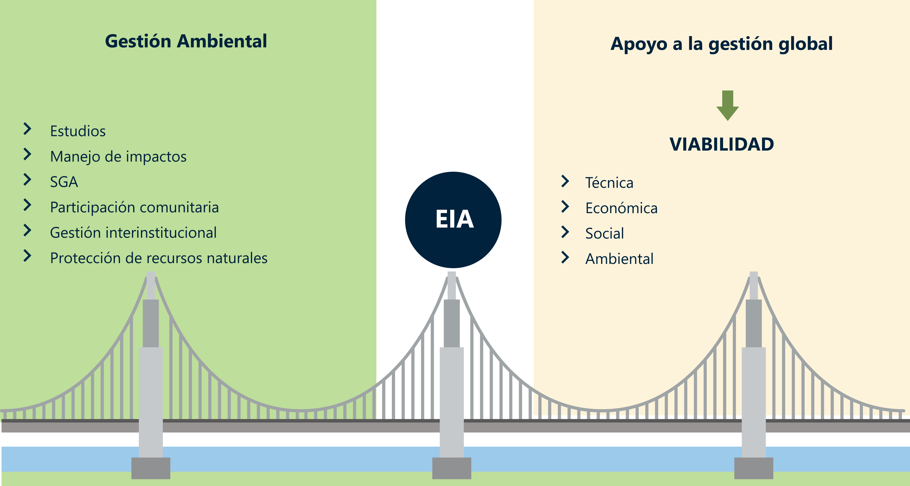
Se puede concluir entonces que toda EIA se debe realizar siguiendo secuencialmente cuatro (4) grandes fases o componentes, como se ilustran.
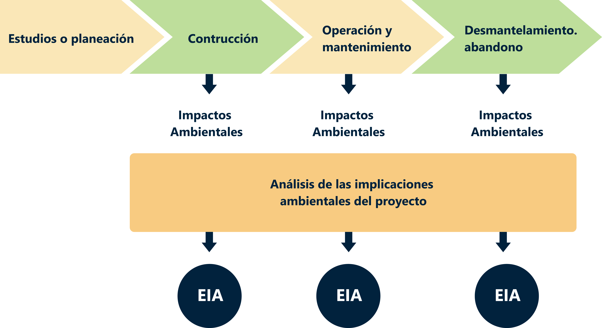
Ver imagen: Esquema general de la EIA Manual EIA Jorge Arboleda
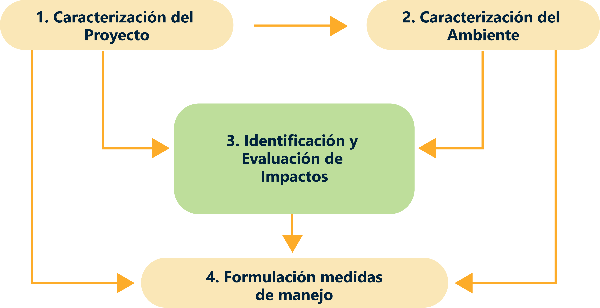
Tipos de impacto ambiental
Los impactos ambientales se derivan de los aspectos ambientales podríamos decir que los aspectos ambientales son las causas en la interacción del hombre con el medio ambiente y el impacto su consecuencia
ejemplos de impacto:
Aspecto ambiental: Tala de árboles (causa) y el impacto ambiental (consecuencia) deforestación y desplazamiento de especie.
Generación de residuos (causa) y el impacto ambiental (consecuencia) sobrepresión en el relleno sanitario.
Generación de emisiones (causa) y el impacto Contaminación del aire (consecuencia).
Generación de vertimientos (causa) y el impacto ambiental contaminación del agua (consecuencia).
Ver tabla Ejemplos impactos ambientales Manual EIA Jorge Arboleda
A tener en cuenta:
Para ampliar la información de los aspectos e impactos ambientales puede dirigirse a material de apoyo Manual para la evaluación de impactos ambiental de proyecto, obra o actividad de Jorge Arboleda.
Actividad didáctica: XXXXXXXXXXXXXXXXXXX.

Acabamos de ver algunos usos del mercurio que fueron surgiendo en la historia de la humanidad, sin embargo, existen otros que exploraremos a continuación, por ello es necesario que realice la actividad de aprendizaje Procesos y Productos en donde encontrará unas preguntas de identificación de productos y procesos con mercurio añadido.
Iniciar actividad4. Marco normativo ambiental
4.1 La Normativa en Colombia
Respetado aprendiz, Las normas que se establecen en Colombia parten del hecho de su importancia y jerarquía en las que involucran derechos y obligaciones establecidas en nuestra constitución política. Es importante conocer que normas y/o leyes prevalecen sobre otras y viceversa, por eso vamos a profundizar en este tema.
4.2 Pero antes pregúntate ¿Qué es ordenamiento Jurídico?
En Colombia el derecho se presenta como un sistema jerarquizado de normas que denominamos ordenamiento jurídico. Es así como el ordenamiento jurídico se fundamenta en unas normas de mayor jerarquía que son la Constitución Política o Constitución Nacional, que en Colombia es la expedida por la Asamblea Nacional Constituyente de 1991.
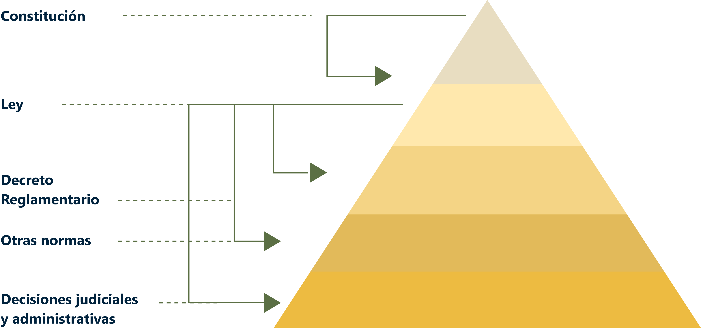
4.3 Marco Normativo Colombiano
Para comprender como funcionan las normas en Colombia, hoy entenderemos como se hacen las leyes en nuestro país. En el siguiente video observaremos como funciona nuestro sistema legislativo. Clic en el video para ampliar la información
Senado Colombia (2016, marzo 14) ¿Sabe usted cómo hacen las leyes en Colombia?
Las normas más relevantes en materia de legislación ambiental en Colombia las puede consultar en la página web del Ministerio de Medio Ambiente en la pestaña Normatividad.
En cuanto a normatividad ambiental local con la secretaria distrital de ambiente, áreas metropolitanas o corporaciones autónomas regionales dependiendo del lugar donde se encuentre la organización para que le aplique su jurisdicción.
4.4 ¿Qué es un normograma?
Un normograma es una herramienta en donde se clasifican y jerarquizan las normas que regulan el actuar de diferentes campos y objetos misionales, cuyo propósito es tener la información pertinente para ejecución de estas en un campo o sector determinado, ambientalmente hablando, el normograma ambiental nos ayuda a identificar y clasificar las normas dependiendo el recurso en cuestión ya sea agua, aire, suelo, entre otras.
En el siguiente boton se describen los conceptos de normograma y matriz de normograma expedido por el Ministerio de justicia Colombia.
Ejemplo 1:
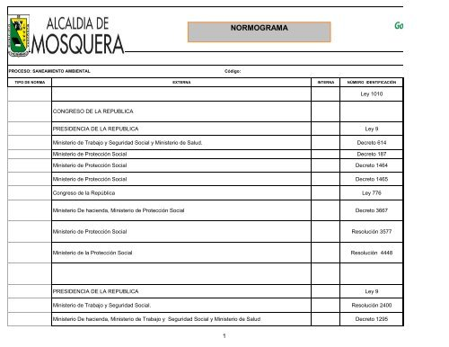
Ejemplo 2:
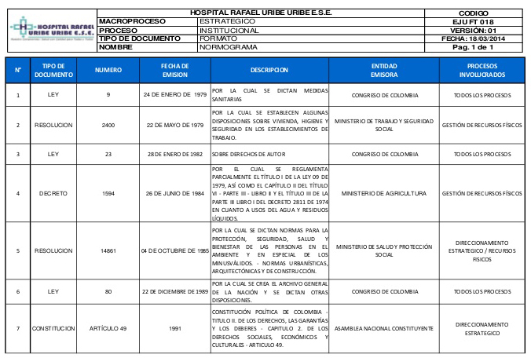
4.5 ¿Qué normas contiene?
En nuestro caso, el normograma contiene las leyes, decretos, acuerdos, resoluciones que se relacionen directamente con el proyecto, así como también las normas internas, protocolos, manuales, estatutos, y en general aquellos actos administrativos que permitan establecer responsabilidades, obligaciones, funciones, y derechos que deben cumplir todas las organizaciones en nuestro país.
Tenga en cuenta, que las normas que incluyen en este formato están encaminadas a dar respuesta a las competencias técnicas que usted ve en la tecnología en control y prevención.
4.6 Autoridades Ambientales en Colombia
Colombia se caracteriza por ser un país con gran diversidad ecológica y ambiental por tal razón, el MINAMBIENTE Ministerio de Ambiente y Desarrollo sostenible es el rector y la máxima autoridad que establece las normas , políticas y la gestión del ambiente y de los recursos naturales renovables , cuyo propósito es el de orientar y regular el ordenamiento ambiental del territorio, establecer políticas ,regulaciones para el aprovechamiento, manejo y uso de los recursos naturales renovables y del ambiente de la nación, a fin de asegurar el desarrollo sostenible y el bienestar de ambiental de todos los colombianos
Observemos el siguiente video, que nos ilustra que hace el MINAMBIENTE.
Ministerio de Ambiente y Desarrollo Sostenible –Colombia (2017, septiembre 27) Creación del Ministerio de Ambiente y Desarrollo Sostenible.
Desde el observatorio de gobernanza del agua en su página web http://www.ideam.gov.co/web/ocga/autoridades, se puede visualizar el orden jerárquico nacional de autoridades ambientales así:
MINISTERIO DE AMBIENTE Y DESARRROLLO SOSTENIBLE: el Ministerio de Ambiente y Desarrollo Sostenible es el rector de la gestión del ambiente y de los recursos naturales renovables.
AUTORIDAD NACIONAL DE LICENCIAS AMBIENTALES: es una Unidad Administrativa Especial, creada mediante el Decreto 3573 del 2011, de orden nacional encargada de que los proyectos, obras o actividades sujetos de licenciamiento, permiso o trámite ambiental cumplan con la normativa, de tal manera que contribuyan al desarrollo sostenible.
PARQUES NACIONALES NATURALES DE COLOMBIA: es una Unidad Administrativa Especial, creada mediante el Decreto 3572 del 2011, de orden nacional encargada de la administración y manejo del Sistema de Parques Nacionales Naturales y la coordinación del Sistema Nacional de Áreas Protegidas, así como de su administración, control y conservación.
AUTORIDADES AMBIENTALES REGIONALES (CAR): Las Corporaciones Autónomas Regionales - CAR son entes corporativos de carácter público, creados por la ley, integrados por las entidades territoriales que por sus características constituyen geográficamente un mismo ecosistema o conforman una unidad geopolítica, biogeográfica o hidro geográfica, dotados de autonomía administrativa y financiera, patrimonio propio y personería jurídica, encargados por la ley de administrar, dentro del área de su jurisdicción el medio ambiente y los recursos naturales renovables y propender por su desarrollo sostenible, de conformidad con las disposiciones legales y las políticas del MADS.
Visualice la matriz informativa de las corporaciones autónomas regionales y de desarrollo sostenible en el país. Clic para ir al enlace:
AUTORIDADES AMBIENTALES URBANAS: estas instituciones están encargadas de promover y ejecutar programas y políticas nacionales, regionales y sectoriales en relación con el medio ambiente y los recursos naturales renovables -las mismas funciones de las Corporaciones Autónomas Regionales- en los municipios, distritos o áreas metropolitanas cuya población urbana fuere igual o superior a un millón de habitantes
Departamento Técnico Administrativo del Medio Ambiente de Barranquilla.
Departamento Administrativo Distrital del Medio Ambiente de Santa Marta.
Establecimiento Público Ambiental de Cartagena.
Área Metropolitana del Valle de Aburrá.
Secretaría Distrital de Ambiente de Bogotá.
Departamento Administrativo para Gestión del Medio Ambiente de Cali.
¡Sitios de interés! Para la búsqueda de la información normativa, le sugerimos visitar las siguientes páginas con contenido relacionado
4.7 Sistema Nacional Ambiental SINA
En Colombia la ley 99 de 1993 creó el Sistema Nacional Ambiental (SINA), que se define como el conjunto de orientaciones, normas, actividades, recursos, programas e instituciones que permiten la puesta en marcha de los principios generales ambientales contenidos en la Constitución Política de Colombia de 1991 y la ley 99 de 1993.
Sabias que!!!!!
El SINA está integrado por el Ministerio del Medio Ambiente, las Corporaciones Autónomas Regionales, las Entidades Territoriales y los Institutos de Investigación adscritos y vinculados al MINAMBIENTE.
¿Sabe cuáles son las principales funciones del SINA?
El sistema nacional ambiental realiza las siguientes funciones:
Dirigir y coordinar el Sistema Nacional Ambiental. -SINA-
Apoyar y coordinar los procesos de planificación de las autoridades ambientales.
Definir y orientar, de acuerdo con las directrices del ministro, las líneas de investigación y estudios ambientales.
Orientar y coordinar la creación de espacios y mecanismos para fomentar la coordinación, fortalecimiento, articulación y mutua cooperación de las entidades que integran el Sistema Nacional Ambiental.
Solicitar a las autoridades ambientales y demás entidades del Sector la información que se requiera para la formulación de la política ambiental y el seguimiento a la ejecución de sus planes y programas.
Definir los aspectos ambientales, para la formulación de las políticas nacionales de población.
Brindar orientación a las entidades territoriales.
Coordinar con el Viceministerio la formulación e implementación de la política de ordenamiento ambiental del territorio.
Proponer las regulaciones ambientales sobre uso del suelo.
Emitir conceptos técnicos sobre los planes de ordenamiento territorial de los municipios y distritos.
Impartir directrices a las entidades territoriales, sectores económicos y demás agentes productivos, de servicios y del conocimiento en el manejo de los efectos e impactos ambientales de los desastres naturales.
Orientar la formulación de la política y los mecanismos para la protección del conocimiento tradicional asociado a la conservación y uso sostenible de la biodiversidad.
Dar orientaciones, lineamientos y directrices en educación y participación en materia ambiental.
Teniendo en cuenta todas estas funciones que realiza en SINA, vemos la importancia de este organismo en el desarrollo sistémico y organizado para la realidad ambiental en nuestro país. Visualice el video que muestra lo que se ha realizado a partir de su creación en 1993 y gestión realizada hasta nuestros días: clic al video:
4.8 Cumbres de la tierra
Cumbre de la Tierra es la expresión que se utiliza para denominar las Conferencias de Naciones Unidas (ONU) sobre el Medio ambiente y su Desarrollo por medio del Programa de las Naciones Unidas para el Medio Ambiente (PNUMA) , un tipo excepcional de encuentro internacional entre jefes de estado de todos los países del mundo, con el fin de alcanzar acuerdos sobre el medio ambiente, desarrollo, cambio climático, biodiversidad y otros temas relacionados.
La primera Cumbre de la Tierra se realizó en Estocolmo (Suecia), del 5 al 16 de junio de 1972.
Veinte años después se realizó la segunda en Río de Janeiro (Brasil), del 2 al 13 de junio de 1992.
La tercera se realizó en Johannesburgo (Sudáfrica), del 23 de agosto al 5 de septiembre del 2002.
La cuarta cumbre se reunió en junio de 2012 en Río de Janeiro, bajo la denominación de Conferencia de Desarrollo Sostenible Río+20.
para ampliar la información haga clic en el enlace:
Haga un alto en este tema y visualice el video propuesto.
Unesco (2017, enero 26 ) Los Objetivos de Desarrollo Sostenible - qué son y cómo alcanzarlos.
¡Estimado Aprendiz!
Para profundizar en el tema lo invitamos a consultar en material complementario / Instructivo Matriz legal.
5. Identificación de impactos ambientales por ciclo de vida
El ACV Análisis del Ciclo de Vida es una metodología de evaluación de impacto que se usa sobre todo para empresas de producción de productos, que ayuda a identificar por medio de un diagrama de flujo de entradas (insumos) y salidas (productos o residuos de la producción) los diferentes aspectos ambientales generados y la cantidad generada en los mismos si realizamos balances de materia y energía.
Para ello, lo invitamos a conocer primero los conceptos básicos. Haga clic en los 9 folders del archivador:
5.1 Proveso
Conjunto de actividades mutuamente relacionadas o que interactúan, las cuales transforman elementos de entrada en resultados ICONTEC (2007) NTC ISO 14040 Gestión Ambiental. Análisis de ciclo de vida, principios y marco de referencia p. 3.
Los procesos tienen entradas y salidas:
Los Insumos (materias primas)
Los procesos (actividades)
Los productos (los resultados)
Esquema Insumos Esquemas y Productos
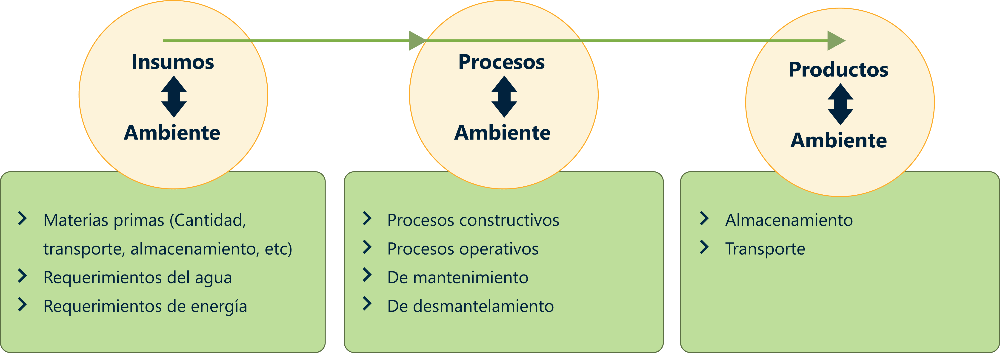
5.2 Los diagramas de flujo
De acuerdo con lo que expone Arboleda. (2008) el conceptualiza que los diagramas similares a los de flujo de procesos o los balances de masas o energía, van mostrando en forma secuencial y sistemática la forma como se construye o funciona el proyecto permitiendo identificar fácilmente aquellos puntos donde se presentan actividades que se pueden relacionar con el ambiente, las cuales corresponden a las ASPI (Acciones Susceptibles de Producir Impactos).
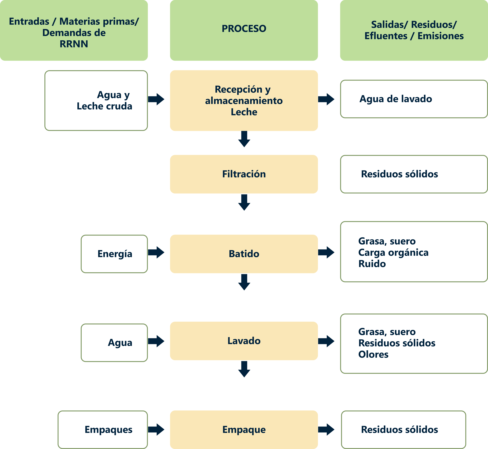
5.3 Los aspectos ambientales
De acuerdo con la Norma ISO 14001 define el aspecto ambiental como cualquier elemento de las actividades, productos o servicios de una organización que pueden interactuar recíprocamente con el ambiente, indicando la existencia potencial de un impacto ambiental negativo o positivo.
A continuación, podemos ilustrar los aspectos ambientales más comunes en los procesos manufactureros o industriales.
| Aspecto | Tipo |
|---|---|
| Vertimientos |
|
| Emisiones |
|
| Residuos |
|
| Aspecto | Tipo |
|---|---|
| Consumos |
|
| Peligros |
|
5.4 Ciclo de vida del producto
La ISO 14001:2015 define el ciclo de vida como un conjunto de etapas consecutivas e interrelacionadas de un producto o servicio desde el momento en que se obtiene la materia prima hasta que se le entregan al consumidor final.
Por ejemplo: si por ejemplo si se fabrican pisos de madera, la perspectiva del ciclo de vida tendrá en cuenta todos los riesgos, y posibles impactos ambientales que se produzcan desde la obtención de la materia prima, en este caso la madera, pasando por todas sus etapas de transformación (lijado, barnizado, diseño, ensamblaje…) hasta que llega a manos del consumidor final (incluimos transporte, almacenaje…).
Apreciación general del ciclo de vida
El ACV considera el ciclo de vida completo de un producto, desde la extracción y adquisición de la materia prima, pasando por la producción de energía y materia, y la fabricación, hasta el uso y el tratamiento al final de la vida útil y la disposición final. A través de esta visión general y perspectiva sistemática, se puede identificar y posiblemente evitar el desplazamiento de una carga ambiental potencial entre las etapas del ciclo de vida o los procesos individuales.
Etapas de un ACV
Los estudios de ACV se componen de cuatro etapas:
La definición del objetivo y el alcance.
El análisis del inventario.
La evaluación del impacto.
La interpretación.
El desarrollo de un Análisis de Ciclo de Vida, de acuerdo a la norma ISO 14040, debe cubrir las siguientes etapas metodológicas:
Etapa 1
Definición del Objetivo y Alcance del ACV
En los objetivos se exponen los motivos por los que se desarrolla el estudio, la aplicación prevista y a quién va dirigido. El alcance consiste en la definición de la amplitud, profundidad y detalle del estudio.
Etapa 2
Análisis de Inventario de Ciclo de Vida
Esta fase incluye la identificación y cuantificación de las entradas (consumo de recursos) y salidas (emisiones al aire, suelo y aguas y generación de residuos) del sistema del producto. Por sistema del producto se entiende el conjunto de procesos unitarios conectados material y energéticamente que realizan una o más funciones idénticas.
Etapa 3
Durante esta etapa, utilizando los resultados del análisis de inventario, se evalúa la importancia de los potenciales impactos ambientales generados por las entradas y salidas del sistema del producto.
Etapa 4
La cual incluye la combinación de los resultados de las dos etapas anteriores, con la finalidad de extraer, de acuerdo a los objetivos y alcance del estudio, conclusiones y recomendaciones que permitan la toma de decisiones.
Escuela de Organización Industrial (2016) Análisis de Ciclo de Vida. p.18.
Con los siguientes videos se ilustrará de una manera lúdica, como diseñar un análisis del ciclo de vida según la ISO 14040 Análisis del Ciclo de vida.
5.5 Metodología ACV
ClimACT Interreg SUDOE. [CLIMACT]. (2018 Noviembre 20)Analisis de Ciclo de Vida.
Ejemplos:
Investigación Desarrollo e innovación de Estructuras y Materiales. [DAPCO IDIEM]. (s.f). Análisis de ciclo de vida.
Biblioteca del plástico (2016 junio 7). Análisis de Ciclo de Vida.
¡Estimado Aprendiz!
Para profundizar en el tema lo invitamos a consultar en material complementario / Metodología Análisis del Ciclo de vida ISO 14040.
Y se recomienda consultar la norma NTC-ISO 14040-2007 gestión ambiental análisis de ciclo de vida principios y marco de referencia debe ingresar a la biblioteca SENA en base de datos http://biblioteca.sena.edu.co/paginas/bases.html buscar ICONTEC y buscar norma NTC 14040.
6. Métodos e instrumentos para la recolección de la información
Los métodos y técnicas de recolección de datos pueden dividirse en dos categorías: métodos primarios de recolección de datos y métodos secundarios de recolección de datos.
6.1. Métodos de recolección de datos primarios
Los datos primarios se recolectan de la experiencia de primera mano y no se utilizan en el pasado. Esta información es específica, altamente auténtica y precisa.
Los métodos de recolección de datos primarios pueden dividirse en dos categorías: métodos cuantitativos y métodos cualitativos.
Métodos cuantitativos
Los métodos cuantitativos para la investigación de mercados y la previsión de la demanda suelen utilizar herramientas estadísticas. Aquí, la demanda se pronostica sobre la base de datos históricos.
Estos métodos y técnicas de recolección de datos primarios se utilizan generalmente para hacer pronósticos a largo plazo. Son altamente confiables, ya que el elemento de subjetividad es mínimo.
Métodos cuantitativos
Los métodos cuantitativos para la investigación de mercados y la previsión de la demanda suelen utilizar herramientas estadísticas. Aquí, la demanda se pronostica sobre la base de datos históricos.
Estos métodos y técnicas de recolección de datos primarios se utilizan generalmente para hacer pronósticos a largo plazo. Son altamente confiables, ya que el elemento de subjetividad es mínimo.
Análisis de series cronológicas o temporales: el término se refiere a un orden secuencial de valores de una variable, conocido como tendencia a intervalos de tiempo iguales. Utilizando tendencias, una organización puede predecir la demanda de sus productos y servicios para el tiempo proyectado.
Técnicas de suavizado: en los casos en que la serie temporal carece de tendencias significativas, se pueden utilizar técnicas de suavizado para eliminar una variación aleatoria de la demanda histórica. Esto ayuda a identificar patrones y niveles de demanda que pueden ser usados para estimar la demanda futura Los métodos más comunes utilizados en las técnicas de suavizado de la previsión de la demanda son el método de media móvil simple y el método de media móvil ponderada.
Método Barométrico: también conocido como el enfoque de los indicadores principales, este método se utiliza para especular sobre las tendencias futuras en función de la evolución actual. Cuando un evento pasado se considera para predecir el evento futuro, el evento pasado actuaría como un indicador principal.
Métodos cualitativos
Los métodos de recolección de datos cualitativos son especialmente útiles en situaciones en las que no se dispone de datos históricos, no se necesitan números ni cálculos matemáticos.
La investigación cualitativa está estrechamente relacionada con palabras, sonidos, sentimientos, emociones, colores y otros elementos que no son cuantificables.
Estas técnicas se basan en la experiencia, el juicio, la intuición, las conjeturas, las emociones, etc.
Los métodos y técnicas de recolección de datos cuantitativos no proporcionan el motivo de las respuestas de los participantes, a menudo no llegan a las poblaciones subrepresentadas y pueden abarcar largos períodos de tiempo para recopilar los datos. Por lo tanto, es mejor combinar métodos cuantitativos con métodos cualitativos.
En la infografía encontrará algunos de los métodos de recolección de datos cualitativos, explórelos:
Encuestas:
Las encuestas se utilizan para recopilar datos de la audiencia objetivo y recoger información sobre sus preferencias, opiniones, elecciones y comentarios relacionados con tus productos y servicios. La mayoría de los programas de creación de encuestas a menudo ofrecen una amplia gama de tipos de preguntas para seleccionar. También puedes utilizar una plantilla de encuesta ya preparada para ahorrar tiempo y esfuerzo. Las encuestas en línea se pueden personalizar según la marca de la empresa cambiando el tema, el logotipo, etc. Existen diversos métodos de distribución de encuestas, como vía correo electrónico, sitio web, aplicación offline, código QR, redes sociales, etc. Dependiendo del tipo y la fuente de su audiencia, puede seleccionar el canal. Un panel de encuestas puede proporcionar estadísticas relacionadas con la tasa de respuesta, la tasa de finalización, los filtros basados en la demografía, las opciones de exportación y uso compartido, etc. Una vez recopilados los datos, el software para encuestas puede generar varios tipos de informes y ejecutar algoritmos analíticos para descubrir información oculta.
Sondeos:
Los sondeos se componen de una pregunta de opción única o múltiple. Cuando se requiere tener un pulso rápido de los sentimientos de la audiencia, puedes ir a las encuestas. Debido a que son de corta duración, es más fácil obtener respuestas de la gente. También se pueden integrar en varias plataformas. Una vez que los encuestados responden a la pregunta, también se les puede mostrar cómo se encuentran en comparación con las respuestas de los demás.
Entrevistas:
En este método, el entrevistador hace preguntas cara a cara o por teléfono a los encuestados. En las entrevistas cara a cara, el entrevistador hace una serie de preguntas al entrevistado en persona y anota las respuestas. En caso de que no sea posible conocer a la persona, el entrevistador puede apoyarse en una entrevista telefónica. A diferencia de los otros métodos de recolección de datos, este es adecuado cuando sólo hay unos pocos encuestados. Es demasiado largo y tedioso repetir el mismo proceso si hay muchos participantes.
Técnica Delphi:
En él, los expertos del mercado reciben las estimaciones y suposiciones de los pronósticos realizados por otros expertos de la industria. Pueden reconsiderar y revisar sus propias estimaciones e hipótesis sobre la base de la información proporcionada.
Focus Group:
Es otro de los métodos y técnicas de recolección de datos en donde un pequeño grupo de personas, alrededor de 8-10 miembros, se reúnen para discutir las áreas comunes del problema con un moderador que regula la discusión. Cada participante aporta sus puntos de vista sobre el tema en cuestión. Al final de la discusión, el grupo llega a un consenso.
Cuestionario:
Un cuestionario es un conjunto impreso de preguntas, abiertas o cerradas, que los encuestados deben responder en función de sus conocimientos y experiencia con el tema. El cuestionario es parte de la encuesta, mientras que el objetivo final de un cuestionario puede o no ser una encuesta.
6.2 Métodos y técnicas de recolección de datos secundarias
Los métodos y técnicas de recolección de datos secundarios son los datos que se han utilizado en el pasado. El investigador puede obtener datos de las fuentes tanto internas como externas a la organización.
Fuentes internas de datos secundarios
Registros.
Estados Financieros.
Revistas.
Informes.
Resúmenes ejecutivos.
Fuentes externas de datos secundarios
Informes de los gobiernos.
Comunicados de prensa.
Revistas de negocios.
Bibliotecas.
Internet.
La recolección de datos secundarios también puede incluir técnicas cuantitativas y cualitativas. Estos se encuentran fácilmente disponibles y, por lo tanto, son menos lentos y caros en comparación con los datos primarios.
Sin embargo, en el caso de los métodos secundarios de recogida de datos, no se puede verificar la autenticidad de los datos recogidos.
Tomado de: QuestionPro (s,f)¿Cuáles son los métodos y técnicas de recolección de datos más efectivos?
Por tanto, lo invitamos a visualizar el siguiente video:
¡Estimado aprendiz!
Para profundizar en el tema lo invitamos a consultar en material complementario / Instructivo tabulación y análisis de la información.
7. Diagnóstico ambiental
Si una empresa aspira a ser responsable, el primer paso es ser consecuente con los impactos de su actividad en el medio ambiente y en la sociedad.
La gestión ambiental implica la integración de las preocupaciones medioambientales en la toma de decisiones y en las operaciones de la organización. Para ello es necesario el compromiso de la dirección, la medición y evaluación de impactos, el desarrollo de procesos y productos respetuosos con el entorno, y el diálogo y la sensibilización con iniciativas que promuevan la sostenibilidad.
Pero antes de todo esto, y para poder avanzar en la mencionada gestión ambiental de la empresa, es indispensable realizar un diagnóstico ambiental preliminar.
A partir de este diagnóstico ambiental, la organización podrá conocer e interpretar su impacto ambiental y determinar si sus actuaciones son o no aceptables desde este punto de vista, Pero ¿qué obtiene la organización con esta evaluación ambiental inicial? Aquí hay algunos beneficios:
Permite conocer su desempeño medioambiental, tanto las prácticas como los procedimientos existentes relacionados con la gestión ambiental.
Determina los impactos directos e indirectos, y posibilita la medición del beneficio o el perjuicio de estos.
Ayuda a localizar las causas de los impactos y los agentes implicados.
Permite detectar áreas de mejora y definir las posibilidades para intervenir.
Asigna la responsabilidad de los impactos y la capacidad de influencia.
Determina la percepción del problema por parte de los implicados y la disposición de éstos para participar en su solución.
Detecta riesgos, amenazas y oportunidades.
Evalúa el coste de los impactos y el de las medidas para evitarlos o mitigarlos.
Comprueba que se está cumpliendo con la legislación y la normativa aplicable.
Existe una serie de aspectos genéricos que se evalúan en todo diagnóstico ambiental, como el consumo de materias primas, energía y agua, las emisiones de contaminantes y la generación de residuos, a los que la empresa puede añadir otros problemas específicos de su actividad.
Tomado de: Estévez, R. (2017, Julio 13). El diagnóstico ambiental en la empresa responsable.
Un documento diagnóstico ambiental en una organización como mínimo debe tener lo siguiente:
Características del sistema socio ecológico que rodea la empresa, descripción de los componentes ambientales y su afectación.
Descripción de la organización proyecto y análisis del ciclo de vida de donde se identifiquen los aspectos ambientales significativos.
Identificación de los requisitos legales ambientales que aplica a la organización.
Conclusiones del diagnóstico.
¡Estimado aprendiz!
Para profundizar en el tema lo invitamos a consultar en material complementario / Instructivo informe diagnóstico ambiental
Glosario
Aspecto ambiental:elemento de las actividades, productos o servicios de una organización que interactúa o puede interactuar con el medio ambiente. (NTC ISO 14001:2015)
Ciclo de vida:etapas consecutivas e interrelacionadas de un sistema de producto (o servicio), desde la adquisición de materia prima o su generación a partir de recursos naturales hasta la disposición final. (NTC ISO 14001:2015)
Evaluación de impacto ambiental:se entiende por evaluación de impacto ambiental, el conjunto de estudios y sistemas técnicos que permiten estimar los efectos que la ejecución de un determinado proyecto, obra o actividad, causa sobre el medio ambiente, el cual tiene la identificación de los aspectos e impactos ambientales por medio de metodologías cuantitativas y/o cualitativas como puede ser el desarrollo de matrices de impacto ambiental. (Vicente Conesa -Guía metodológica para la evaluación del impacto ambiental).
Factores ambientales:factores Ambientales o Parámetros ambientales, englobamos los diversos componentes del Medio Ambiente entre los cuales se desarrolla la vida en nuestro planeta. Son el soporte de toda actividad humana. Son susceptibles de ser modificados por los humanos y estas modificaciones pueden ser grandes y ocasionar graves problemas, generalmente difíciles de valorar ya que suelen ser a medio o largo plazo, o bien problemas menores y entonces son fácilmente soportables. Los factores ambientales considerados son:
- El hombre, la flora y la fauna.
- El suelo, el agua, el aire, el clima y el paisaje.
- Las interacciones entre los anteriores.
- Los bienes materiales y el patrimonio cultural.
(Vicente Conesa - Guía Metodológica para la Evaluación del Impacto Ambiental).
Impacto ambiental:cambio en el medio ambiente, ya sea adverso o beneficioso como resultado total o parcial de los aspectos ambientales de una organización. (NTC ISO 14001:2015)
Línea base ambiental:es la descripción de la situación actual, en la fecha del estudio, sin influencia de nuevas intervenciones antrópicas. En otras palabras, es la fotografía de la situación ambiental imperante, considerando todas las variables ambientales, en el momento que se ejecuta el estudio. Se consideran todos los elementos que intervienen en una evaluación de impacto ambiental y una situación crítica, reseñando actividad humana actual, estado y situación de la biomasa vegetal y animal, clima, suelos, etc. (Wikipedia)
Medio ambiente:entorno en el cual una organización opera, incluidos el aire, el agua, el suelo, los recursos naturales, la flora, la fauna, los seres humanos y sus interrelaciones. (NTC ISO 14001:2015)
Plan de manejo ambiental:es el conjunto detallado de medidas y actividades que, producto de una evaluación ambiental, están orientadas a prevenir, mitigar, corregir o compensar los impactos y efectos ambientales debidamente identificados, que se causen por el desarrollo de un proyecto, obra o actividad. Incluye los planes de seguimiento, monitoreo, contingencia, y abandono según la naturaleza del proyecto, obra o actividad. (Decreto 2820/2010 art. 1)
Prevención de la contaminación:utilización de procesos, prácticas, técnicas, materiales, productos, servicios o energía para evitar, reducir o controlar (en forma separada o en combinación) la generación, emisión o descarga de cualquier tipo de contaminante o residuo, con el fin de reducir impactos ambientales adversos. (NTC ISO 14001:2015)
Proceso:Conjunto de actividades interrelacionadas o que interactúan, que transforman las entradas en salidas (NTC ISO 14001:2015)
Material complementario
Tema 1
| Nombre del documento o material | Tipo de material | Enlace del recurso |
|---|---|---|
| National Geographic (2015, noviembre 26) El impacto ambiental del hombre 2007. | Video | Ver |
Tema 2
| Nombre del documento o material | Tipo de material | Enlace del recurso |
|---|---|---|
| Tierra colombiana (s,f) Mapa de ecosistemas de Colombia. | Web | Ver |
| PROGuía No. 1 Elaboración de estudios de impacto ambiental 2004 - DEVIDA. Tabla 1 Componentes ambientales. | Docx | Ver |
| IPCC, (2013): Glosario [Planton, S. (ed.)]. En: cambio climático 2013. Bases físicas. Contribución del grupo de trabajo I al quinto informe de evaluación del grupo intergubernamental de expertos sobre el cambio climático [Stocker, T.F., D. Qin, G.-K. Plattner, M. Tignor, S.K. Allen, J. Boschung, A. Nauels, Y. Xia, V. Bex y P.M. Midgley (eds.)]. Cambridge University Press, Cambridge, Reino Unido y Nueva York, NY, Estados Unidos de América. | Web | Ver |
| Probides (2001) Herramientas para la gestión ambiental Jorge Alonso Arboleda. (2008) Manual para la evaluación de impactos ambiental de proyecto, obra o actividad. | Ver | |
| Manual para la evaluación de impacto ambiental de proyectos, obras o actividades. | Ver | |
| Manual para la evaluación de impacto ambiental de proyectos, obras o actividades - Anexos. | Ver | |
| ANLA Autoridad Nacional de licencias Ambientales. (2018) Guía para la definición, identificación y delimitación del área de influencia. | Ver | |
| Plantaciones La Isla Flores de exportación. (2018) Estudio de impacto ambiental ex post y plan de manejo finca florícola la isla. 8. Línea Base Ambiental. | Ver |
Tema 3
| Nombre del documento o material | Tipo de material | Enlace del recurso |
|---|---|---|
| SENA (2019) Matriz legal. | Docx | Ver |
| Senado Colombia (2016) ¿Sabe usted cómo se hacen las leyes en Colombia? | Video | Ver |
| Minjusticia (2015) Normograma y gestión documental. | Ver | |
| Alcaldia de mosquera (s,f) Normograma. | JPG | Ver |
| Hospital Rafael Uribe Uribe (s,f) Normograma. | JPG | Ver |
| Ministerio de Ambiente y Desarrollo Sostenible – Colombia (septiembre 2017). creación del Ministerio de Ambiente y Desarrollo Sostenible. | Video | Ver |
| Universidad de Antioquia (s,f). formación ciudadana y constitucional. | Web | Ver |
| MinAmbiente (2020). Observatorio de gobernanza del agua. | Web | Ver |
| MinAmbiente (2020). página oficial inicio. | Web | Ver |
| Alcaldía Mayor de Bogotá (2020). Secretaría distrital de ambiente. | Web | Ver |
| Gobierno de Colombia. (2020) CAR. | Web | Ver |
| FNA (s,f). Política y legislación ambiental. | Web | Ver |
| MinAmbiente (2020) Corpouraba. | Web | Ver |
| MinAmbiente (diciembre, 2019). Antioquia conmemoró los 25 años del Sistema Nacional Ambiental. | Video | Ver |
| Unesco (enero, 2017). Los Objetivos de Desarrollo Sostenible - qué son y cómo alcanzarlos. | Video | Ver |
Tema 4
| Nombre del documento o material | Tipo de material | Enlace del recurso |
|---|---|---|
| Fundación Chile. [FCH]. (2017 Mayo 2) Ciclo de vida de los productos. | Video | Ver |
| ClimACT Interreg SUDOE. [CLIMACT]. (2018 Noviembre 20) Analisis de Ciclo de Vida. | Video | Ver |
| Investigacion Desarrollo e innovacion de Estructuras y Materiales. [DAPCO IDIEM]. (s.f). Análisis de ciclo de vida. | Video | Ver |
| Biblioteca del plástico. (2016 junio 7) Análisis de Ciclo de Vida. | Video | Ver |
| ICONTEC (2007) NTC-ISO 14040-2007 Gestión Ambiental Análisis de Ciclo de vida Principios y Marco de Referencia. | Web | Ver |
Tema 5
| Nombre del documento o material | Tipo de material | Enlace del recurso |
|---|---|---|
| SENA línea Produccion5 (2014, Julio 10). Recolección de Información. | Video | Ver |
| Metodología Análisis del Ciclo de vida ISO 14040, Esperanza Haya Leiva (2016). | Ver | |
| SENA (2019) Instructivo tabulación y análisis de la información. | Docx | Ver |
Tema 6
| Nombre del documento o material | Tipo de material | Enlace del recurso |
|---|---|---|
| SENA (2019) Instructivo Informe Diagnóstico Ambiental. | Docx | Ver |
Referencias bibliográficas
Alcaldía de Medellín (2014) Guía de Manejo Socioambiental para la Construcción de Obras de Infraestructura Pública de Medellín.
ANLA Autoridad Nacional de licencias Ambientales. (2018) Guía para la definición, identificación y delimitación del área de influencia.
Arboleda, J. A. (2008). Manual de evaluación de impacto ambiental de proyectos, obra o actividades. Medellin, Colombia. Recuperado de:https://doi.org/10.1017/CBO9781107415324.004
Conesa V. (1993). La Evaluación del Impacto Ambiental. Mundi Prensa. Segunda edición, Madrid, España.
Español, I. l. (2016). Evaluación de Impacto Ambiental. Dextra Editorial S.L.; Edición: 1.
Garmendia Salvador, A (2005). Evaluación de Impacto Ambiental. Pearson.
ICONTEC (2000). Norma NTC-ISO 14031 Instituto Colombiano de Normas Técnicas. Gestión Ambiental, Evaluación del Desempeño Ambiental, Directrices.
ICONTEC (2009). GTC 104 Gestión del Riesgo Ambiental, Principios y Procesos. ICONTEC (2007). ISO 14040 Gestión Ambiental, Análisis de Ciclo de vida. Principios y marco de referencia.
ICONTEC (2010). Noma NTC-ISO 14050 Instituto Colombiano de Normas Técnicas. Gestión ambiental, vocabulario.
ICONTEC (2015). Norma NTC-ISO 14001 Sistema de gestión ambiental.
Martínez Orozco, J. (2020) Casos prácticos en Evaluación de Impacto Ambiental. Dextra Editorial.
Ministerio de Medio Ambiente. (2002) Manual de Evaluación de Estudios Ambientales.